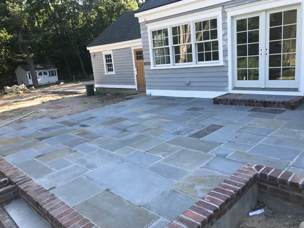
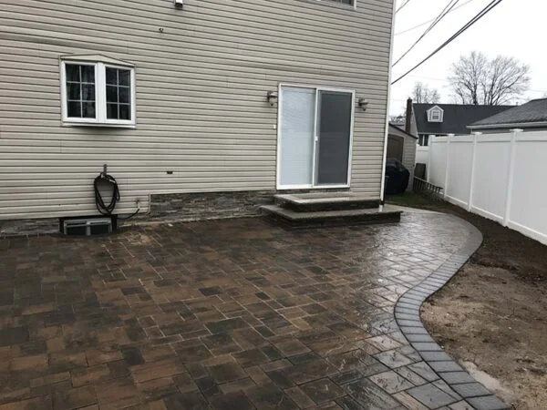

Discover how concrete creates durable driveways and walkways in Syosset, NY. Learn why homeowners trust ORA Construction for long-lasting construction solutions.

Nestled in the heart of Long Island’s North Shore, Syosset, New York is a community known for its peaceful suburban charm and strong sense of local pride. Located within Nassau County, Syosset offers the perfect blend of residential comfort and accessibility to the vibrant culture of nearby New York City. With a population of just over 19,000 residents, the hamlet maintains a close-knit feel while still benefiting from the economic and cultural opportunities of the greater metropolitan region.
The area enjoys four distinct seasons, each bringing its own character to the community. Summers are warm and lively, often reaching temperatures in the high 80s, while winters bring crisp air and occasional snowfall that transforms neighborhoods into picturesque scenes. Spring and fall are particularly pleasant, with tree-lined streets bursting into color. These seasonal shifts make durable outdoor surfaces—like concrete driveways and walkways—especially important for homeowners.
Syosset is also known for its family-friendly atmosphere and high quality of life. Residents enjoy easy access to destinations such as Planting Fields Arboretum State Historic Park, a breathtaking estate with gardens, greenhouses, and historic architecture. Throughout the year, nearby towns host seasonal events, farmers markets, and community festivals that draw visitors from across Long Island.
Because of the region’s active lifestyle and changing weather patterns, property owners here value structures that are built to last. That’s where experienced builders come in. Companies like ORA Construction, a trusted Nassau County construction company, help homeowners and businesses create durable outdoor features—from driveways to walkways—using materials designed to withstand the local climate.
When people think about surfaces that endure decades of use, concrete almost always comes to mind. Its reputation for durability isn’t accidental—it’s the result of a carefully engineered material that combines cement, aggregates, and water into a remarkably strong compound.
Concrete performs exceptionally well under the daily stress of vehicles, foot traffic, and environmental exposure. In regions like Long Island, where winters can bring freezing temperatures followed by thaw cycles, materials must resist cracking and shifting. Properly installed concrete has the structural integrity to endure these changes.
For homeowners working with a Nassau County construction company, concrete also offers long-term value. While other materials may require frequent repairs or replacements, a professionally installed concrete driveway can last 30 years or more. This longevity makes it a preferred choice for projects such as driveway paving Nassau County properties depend on.
Beyond strength, concrete is incredibly versatile. It can be finished in smooth surfaces, textured patterns, or decorative designs that complement a property’s style. That adaptability is why many homeowners trust experienced professionals like ORA Construction for installations that blend durability with visual appeal.
8 Woodhollow Ln, Huntington, NY 11743, USA
Construction Company
Service, USA
The secret to concrete’s longevity lies beneath the surface. A well-constructed driveway or walkway begins with proper site preparation, base compaction, and reinforcement techniques that ensure the material performs under pressure.
A skilled general contractor Nassau County property owners trust understands that the foundation determines the lifespan of the finished surface. Without proper grading and sub-base preparation, even the strongest materials can fail. This is why professional builders emphasize meticulous groundwork before pouring concrete.
Reinforcements such as steel rebar or wire mesh can further strengthen the slab, helping distribute weight evenly. These reinforcements are particularly important for driveways that must support vehicles and heavy equipment.
When executed correctly, the result is a surface capable of handling decades of use without major structural issues. This attention to detail is one reason why experienced builders, including those involved in new home construction Long Island projects, rely heavily on concrete for exterior surfaces.
Ora Construction - Home Remodeling, Masonry & Landscape Design
24 David Drive, Syosset,
NY 11791
Phone Number:
(516) 697-7680
Website:
https://ora-construction.com/
Long Island’s climate presents unique challenges for outdoor construction. Summers can bring intense heat, while winters often produce freeze-thaw cycles that place stress on building materials.
Concrete performs exceptionally well under these conditions because of its density and structural composition. When sealed properly, it resists water penetration that could otherwise freeze and expand inside the material.
A reputable masonry contractor Syosset NY homeowners trust will also incorporate expansion joints into the installation. These small but crucial design elements allow concrete to expand and contract naturally as temperatures fluctuate, preventing large cracks from forming.
This weather resilience is particularly valuable for walkways and driveways that remain exposed year-round. Whether the surface is supporting vehicles or guiding guests to a home’s entrance, concrete maintains its structural integrity even in challenging conditions.
Durability alone isn’t enough for many homeowners today. Appearance matters just as much as strength, and modern concrete solutions deliver both.
Advances in finishing techniques allow concrete surfaces to mimic the look of stone, brick, or textured materials. Stamped concrete patterns, polished finishes, and custom coloration options have transformed what was once a purely functional material into an attractive design feature.
Homeowners undertaking projects such as concrete home remodeling Long Island properties often discover that decorative concrete can dramatically elevate curb appeal. A driveway becomes more than just a parking area—it becomes part of the overall design.
These aesthetic improvements also pair well with other home upgrades. For example, when a patio and deck builder Syosset works alongside a construction company masonry team, the result can be a seamless outdoor environment where walkways, patios, and decks connect beautifully.
Concrete isn’t limited to driveways and sidewalks. In fact, it plays a vital role in many broader residential construction projects.
During new home construction Long Island developments, concrete forms the backbone of foundations, walkways, garages, and outdoor living areas. Its structural strength ensures the entire property has a stable base.
Concrete also complements renovation work. A home addition contractor Long Island homeowners rely on may extend driveways or create new pathways that connect expanded living spaces. These additions require materials that match the durability of the existing structure.
The same principle applies to interior renovations. For example, when undertaking a basement remodel Long Island residents often incorporate concrete flooring or reinforced structures that improve both stability and moisture resistance.
Because of its versatility, concrete remains a cornerstone material for builders seeking long-lasting results.

Even the best materials depend on skilled craftsmanship. Concrete installation requires precise timing, proper curing, and careful finishing techniques that only experienced professionals can deliver.
A qualified construction company masonry team understands how variables such as temperature, moisture, and mix ratios influence the final result. Small adjustments during installation can significantly impact the durability of the finished surface.
Working with a trusted Nassau County construction company ensures that these technical details are handled correctly. Professional builders evaluate soil conditions, drainage patterns, and structural requirements before beginning any work.
ORA Construction has built its reputation by combining these technical skills with strong project management. As a respected home builder serving Syosset and surrounding areas, the company approaches every project with attention to detail and a commitment to lasting quality.
Timelines vary depending on the project size. A full new home construction Long Island project may take 8–14 months, while renovations or additions may take several weeks to several months.
A general contractor Nassau County manages the entire construction process. This includes scheduling trades, supervising work, coordinating materials, and ensuring compliance with local building regulations.
Concrete provides the strong foundation required to support the structure of a home. Properly installed concrete foundations ensure long-term stability and durability.
Yes. A professional basement remodel Long Island adds usable living space and can significantly increase a home’s overall value.
Homeowners should evaluate their budget, timeline, and long-term goals. Working with an experienced construction company ensures that planning, design, and construction are handled professionally.